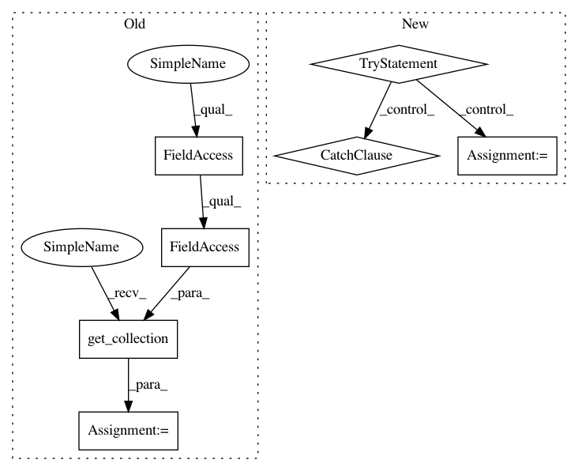

a76c41d2432058c33f3bd34d962ffb232cfce99a,tflearn/helpers/trainer.py,Trainer,__init__,#Trainer#Any#Any#Any#Any#Any#Any#Any#Any#Any#Any#Any#Any#,64
Before Change
max_to_keep=max_checkpoints,
keep_checkpoint_every_n_hours=keep_checkpoint_every_n_hours)
// Saver for restoring a model (With exclude variable list)
all_vars = tf.get_collection(tf.GraphKeys.VARIABLES)
excl_vars = tf.get_collection(tf.GraphKeys.EXCL_RESTORE_VARS)
to_restore = [item for item in all_vars
if check_restore_tensor(item, excl_vars)]
self.restorer = tf.train.Saver(
After Change
if not self.restored:
// TF 0.12 fix
try:
init = tf.global_variables_initializer()
except Exception:
init = tf.initialize_all_variables()
self.session.run(init)
def fit(self, feed_dicts, n_epoch=10, val_feed_dicts=None, show_metric=False,
snapshot_step=None, snapshot_epoch=True, shuffle_all=None,
In pattern: SUPERPATTERN
Frequency: 3
Non-data size: 7
Instances
Project Name: tflearn/tflearn
Commit Name: a76c41d2432058c33f3bd34d962ffb232cfce99a
Time: 2016-12-14
Author: aymeric.damien@gmail.com
File Name: tflearn/helpers/trainer.py
Class Name: Trainer
Method Name: __init__
Project Name: zsdonghao/text-to-image
Commit Name: d42df89c351e0c2a031ea3a9ae17fb7b844e7b79
Time: 2017-01-18
Author: dhsig552@163.com
File Name: tensorlayer/layers.py
Class Name: BatchNormLayer
Method Name: __init__
Project Name: deepchem/deepchem
Commit Name: f1df735684946dbbcefe41e41c7b1c3f2f751a07
Time: 2017-06-05
Author: peastman@stanford.edu
File Name: deepchem/models/tensorgraph/layers.py
Class Name: Dense
Method Name: create_tensor